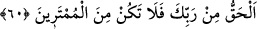

geldi. Bunlardan biri önderleriydi ki adı da Ehib idi. Heyetin iki numaralı şahsiyeti,
aynı zamanda sözcüleri durumunda olan Abdülmesîh idi. Üçüncü zât Alkame el-
Eskaf’ın oğlu Ebû Hârise idi. Bu zât da çok şerefli ve hatırı sayılır biriydi. Roma
İmparatoru kendisi için kiliseler yaptırmıştı. İmparator bu zâta değerli hediyeler de
gönderirdi.
İşte bu Necran heyeti güzel bir şekilde ağırlandı. İkindiden sonra üstlerinde güzel
elbiseler, yüzlerinde vakur ifadeler olduğu halde Medîne Mescidi’nde Hz. Peygamber
(s.a.)’in huzûruna çıktılar. Hemen kendi kıblelerine dönüp ayakta duâ okumaya
başladılar. Ashâb-ı kirâm kendilerine engel olmak istedilerse de Hz. Peygamber:
“Bırakın onları” buyurdu. Onlar gelmezden az evvel, bunlara delil olsun diye Âl-i
İmrân sûresinin baş tarafı nâzil olmuştu.
Duâdan sonra, Ebû Hârise ve onunla birlikte bir diğeri daha Hz. Peygamber (s.a.)’in
yakınına kadar geldiler. Hz. Peygamber (s.a.) onlara:
– “Müslüman olunuz?” buyurdu. Onlar da:
– “Biz senden önce müslüman olduk” dediler. Bunun üzerine Hz. Peygamber (s.a.):
– “Yalan söylüyorsunuz. Şu üç şey sizin müslüman olmadığınızı gösteriyor: Haça
tapmanız, domuz eti yemeniz ve Allah’ın bir oğlu olduğuna inanmanız.”
Necranlılar:
– “Ya Muhammed! Niçin Efendimiz Îsâ’ya sövüyorsun?” dediler. Hz. Peygamber
(s.a.):
– “Ben ne diyorum ki?” buyurdu.
– “Onun bir kul olduğunu söylüyorsun” dediler. Hz. Peygamber (s.a.):
– “Evet o, Allah’ın kulu, peygamberi ve iffetli bâkire Meryem’in rahmine bıraktığı
kelimesidir.” buyurdu.
Necran heyeti galeyana gelip: “Sen hiç babasız bir insan gördün mü? Onun insan
cinsinden bir babası olmadığını kabul ettiğine göre, babasının Allah olması zarûrîdir.”
dediler. Hz. Peygamber (s.a) de: “Adem (a.s.)’ın ne anası ne de babası vardı.”
buyurdu.[45]
Ana-babasız olmasından dolayı Âdem’in, Allah’ın oğlu olması gerekmediği gibi, Îsâ
(a.s.)’ın da Allah’ın oğlu olması gerekmez. Çünkü, ana-babasız var olma, sadece
babasız varolmadan çok daha hârikulâde bir olaydır. Dolayısıyle, garib bir olay, daha
garib bir başka olaya benzetilmiş oluyor ki; hasım, tuhaf bir olay olarak gördüğü şeyden
çok daha tuhafına bakıp düşündüğü zaman, bu hasmın önceki olaydaki şüphesi kesilmiş
olsun.
60. Gerçek, Rabbinden gelendir. Öyle ise şüphecilerden olma.